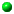

Contents Contents |
| Synopsis |
-
display [ options ...] file [options
...] file
Back to Contents
| Description |
-
Display is a machine architecture independent
image processing and display program. It can display an image on any workstation
screen running an X server. Display can read and write
many
of the more popular image formats (e.g. JPEG,
TIFF,
PNM, Photo CD, etc.).
With display, you can perform these functions on an image:
-
 load an image from a file
-
display the next image
-
display the former image
-
display a sequence of images as a slide show
-
write the image to a file
-
print the image to a
PostScript printer
-
delete the image file
-
create a Visual Image Directory
-
select the image to display by its thumbnail
rather
-
than name
-
undo last image transformation
-
copy a region of the image
-
paste a region to the image
-
restore the image to its original size
-
refresh the image
-
half the image size
-
double the image size
-
resize the image
-
crop the image
-
cut the image
-
flop image in the horizontal direction
-
flip image in the vertical direction
-
rotate the image 90 degrees clockwise
-
rotate the image 90 degrees counter-clockwise
-
rotate the image
-
shear the image
-
roll the image
-
trim the image edges
-
invert the colors of the image
-
vary the color brightness
-
vary the color saturation
-
vary the image hue
-
gamma correct the image
-
sharpen the image contrast
-
dull the image contrast
-
perform histogram equalization on the image
-
perform histogram normalization on the image
-
negate the image colors
-
convert the image to grayscale
-
set the maximum number of unique colors in
the image
-
reduce the speckles within an image
-
eliminate peak noise from an image
-
detect edges within the image
-
emboss an image
-
segment the image by color
-
simulate an oil painting
-
simulate a charcoal drawing
-
annotate the image with text
-
draw on the image
-
edit an image pixel color
-
edit the image matte information
-
composite an image with another
-
add a border to the image
-
add a border to the image
-
surround image with an ornamental border
-
apply image processing techniques to a region
of interest
-
display information about the image
-
zoom a portion of the image
-
show a histogram of the image
-
display image to background of a window
-
set user preferences
-
display information about this program
-
discard all images and exit program
-
change the level of magnification
-
display images specified by a World Wide
Web (WWW) uniform resource locator (URL)
Back to Contents
| Examples |
-
To scale an image of a cockatoo to exactly 640 pixels in width and 480
pixels in height and position the window at location (200,200), use:
display -geometry 640x480+200+200! cockatoo.miff
-
To display an image of a cockatoo without a border centered on a backdrop,
use:
display +borderwidth -backdrop cockatoo.miff
-
To tile a slate texture onto the root window, use:
display -size 1280x1024 -window root slate.png
-
To display a visual image directory of all your JPEG images, use:
display 'vid:*.jpg'
-
To display a MAP image that is 640 pixels in width and 480 pixels in height
with 256 colors, use:
display -size 640x480+256 cockatoo.map
-
To display an image of a cockatoo specified with a World Wide Web (WWW)
uniform resource locator (URL), use:
display ftp://wizards.dupont.com/images/cockatoo.jpg
-
To display histogram of an image, use:
convert file.jpg HISTOGRAM:- | display -
Back to Contents
| Options |
-
Options are processed in command line order. Any option you specify on
the command line remains in effect until it is explicitly changed by specifying
the option again with a different effect. For example to display two images,
the first with 32 colors, and the second with only 16 colors, use:
display -colors 32 cockatoo.miff -colors 16 macaw.miff
-
Display options can appear on the command line or in your X resources
file. See X(1). Options on the command line supersede values specified
in your X resources file.
| -backdrop |
-
display the image centered on a backdrop.
-
This backdrop covers the entire workstation screen and is useful for hiding
other X window activity while viewing the image. The color of the backdrop
is specified as the background color. Refer to X Resources
for details.
| -border
<width>x<heigth> |
-
surround the image with a border of color. See X(1) for details
about the geometry specification.
-
The color of the border is obtained from the X server and is defined
as bordercolor (class borderColor). See X(1) for details.
-
See X(1) for details about the color specification.
| -colormap
type |
-
the type of colormap: Shared or Private.
-
This option only applies when the default X server visual is PseudoColor
or GRAYScale. Refer to -visual for more details. By default,
a shared colormap is allocated. The image shares colors with other X clients.
Some image colors could be approximated, therefore your image may look
very different than intended. Choose Private and the image colors
appear exactly as they are defined. However, other clients may go technicolor
when the image colormap is installed.
| -colors
value |
-
preferred number of colors in the image.
-
The actual number of colors in the image may be less than your request,
but never more. Note, this is a color reduction option. Images with less
unique colors than specified with this option will have any duplicate or
unused colors removed. Refer to quantize for
more details.
The Transparent color space behaves uniquely in that it preserves
the matte channel of the image if it exists.
Note, options -dither, -colorspace, and -treedepth
affect the color reduction algorithm.
| -colorspace
value |
-
the type of colorspace: GRAY, OHTA, RGB,
Transparent,
XYZ,
YCbCr, YIQ, YPbPr,
YUV, or CMYK.
-
Color reduction, by default, takes place in the RGB color space. Empirical
evidence suggests that distances in color spaces such as YUV or YIQ correspond
to perceptual color differences more closely than do distances in RGB space.
These color spaces may give better results when color reducing an image.
Refer to quantize for more details.
The -colors or -monochrome option is required for
this option to take effect.
| -comment
string |
-
annotate an image with a comment.
-
By default, each image is commented with its file name. Use this option
to assign a specific comment to the image. Optionally you can include the
image filename, type, width, height, or other image attribute by embedding
special format characters:
%b file size
%d directory
%e filename extension
%f filename
%h height
%m magick
%p page number
%s scene number
%t top of filename
%w width
%x x resolution
%y y resolution
\n newline
\r carriage return
For example,
-comment "%m:%f %wx%h"
-
produces an image comment of MIFF:bird.miff 512x480 for an image
titled bird.miff and whose width is 512 and height is 480.
-
If the first character of string is @, the image comment
is read from a file titled by the remaining characters in the string.
| -compress
type |
-
the type of image compression: None, BZip, Fax,
Group4,
JPEG,
LZW, RunlengthEncoded or Zip.
-
Use this option with -write to specify the the type of image compression.
See miff for details.
-
Specify +compress to store the binary image in an uncompressed format.
The default is the compression type of the specified image file.
| -contrast |
-
enhance or reduce the image contrast.
-
This option enhances the intensity differences between the lighter and
darker elements of the image. Use -contrast to enhance the image
or +contrast to reduce the image contrast.
| -crop
<width>x<heigth>{+-}<x
offset>{+-}<y offset>{%} |
-
preferred size and location of the cropped image. See X(1) for details
about the geometry specification.
-
To specify a percentage width or height instead, append %. For example
to crop the image by ten percent on all sides of the image, use -crop
10%.
-
Use cropping to apply image processing options to, or display, a particular
area of an image.
-
Omit the x and y offset to generate one or more subimages of a uniform
size.
-
Use cropping to crop a particular area of an image. Use -crop 0x0
to trim edges that are the background color. Add an x and y offset to leave
a portion of the trimmed edges with the image.
The equivalent X resource for this option is
cropGeometry
(class CropGeometry). See X Resources for details.
| -delay
<1/100ths of a second> |
-
display the next image after pausing.
-
This option is useful when viewing several images in sequence. 1/100ths
of a second must expire before the next image is displayed. The default
is to display the image and wait until you choose to display the next image
or terminate the program.
| -density
<width>x<heigth> |
-
vertical and horizontal resolution in pixels of the image.
-
This option specifies an image density when decoding a PostScript
or Portable Document page. The default is the same as the resolution of
your X server (see xdpyinfo(1)). This option is used in concert
with -page.
| -despeckle |
-
reduce the speckles within an image.
| -display
host:display[.screen] |
-
specifies the X server to contact; see X(1).
| -dispose
method |
-
GIF disposal method.
-
Here are the valid methods:
0 No disposal specified.
1 Do not dispose between frames.
2 Overwrite frame with background color from header.
3 Overwrite with previous frame.
| -dither |
-
apply Floyd/Steinberg error diffusion to the image.
-
The basic strategy of dithering is to trade intensity resolution for spatial
resolution by averaging the intensities of several neighboring pixels.
Images which suffer from severe contouring when reducing colors can be
improved with this option.
-
The -colors or -monochrome option is required for this option
to take effect.
-
Use +dither to render Postscript without text or graphic aliasing.
| -edge
factor |
-
detect edges within an image. Specify factor as the percent enhancement
(0.0 - 99.9%).
| -enhance |
-
apply a digital filter to enhance a noisy image.
| -filter
type |
-
use this type of filter when resizing an image.
- Use this option to affect the resizing operation of an image (see
-geometry).
Choose from these filters:
Point
Box
Triangle
Hermite
Hanning
Hamming
Blackman
Gaussian
Quadratic
Cubic
Catrom
Mitchell
Lanczos
Bessel
Sinc
-
The default filter is Lanczos.
| -flip |
-
flip scanlines in the vertical direction.
| -flop |
-
create a "mirror image" by reflecting the image scanlines in the horizontal
direction.
| -frame
<width>x<height+<outer
bevel width>+<inner bevel width> |
-
surround the image with an ornamental border. See X(1) for details
about the geometry specification.
-
The color of the border is specified with the -mattecolor command
line option.
| -gamma
value |
-
level of gamma correction.
-
The same color image displayed on two different workstations may look different
due to differences in the display monitor. Use gamma correction to adjust
for this color difference. Reasonable values extend from 0.8 to
2.3.
-
You can apply separate gamma values to the red, green, and blue channels
of the image with a gamma value list delineated with slashes (i.e. 1.7,2.3,1.2).
-
Use +gamma to set the image gamma level without actually adjusting
the image pixels. This option is useful if the image is of a known gamma
but not set as an image attribute (e.g. PNG images).
| -geometry
<width>x<heigth>{+-}<x
offset>{+-}<y offset>{%}{!}{<}{>} |
-
preferred size and location of the image window. See
X(1)
for details about the geometry specification. By default, the window size
is the image size and the location is chosen by you when it is mapped.
-
By default, the width and height are maximum values. That is, the image
is expanded or contracted to fit the width and height value while maintaining
the aspect ratio of the image. Append an exclamation point to the geometry
to force the image size to exactly the size you specify. For example, if
you specify 640x480! the image width is set to 640 pixels and height
to 480. If only one factor is specified, both the width and height assume
the value.
Use > to change the dimensions of the image only if
its size exceeds the geometry specification. < resizes the image
only
if its dimensions is less than the geometry specification. For example,
if you specify 640x480> and the image size is 512x512, the image
size does not change. However, if the image is 1024x1024, it is resized
to 640x480.
-
To specify a percentage width or height instead, append %. The image size
is multiplied by the width and height percentages to obtain the final image
dimensions. To increase the size of an image, use a value greater than
100 (e.g. 125%). To decrease an image's size, use a percentage less than
100.
-
When displaying an image on an X server, <x offset> and <y offset>
is relative to the root window.
-
The equivalent X resource for this option is geometry (class Geometry).
See X Resources for details.
| -interlace
type |
-
the type of interlacing scheme: None, Line, Plane,
or Partition. The default is None.
-
This option is used to specify the type of interlacing scheme for raw image
formats such as RGB or YUV. None means do not interlace
(RGBRGBRGBRGBRGBRGB...), Line uses scanline interlacing (RRR...GGG...BBB...RRR...GGG...BBB...),
and Plane uses plane interlacing (RRRRRR...GGGGGG...BBBBBB...).
Partition
is like plane except the different planes are saved to individual files
(e.g. image.R, image.G, and image.B).
-
Use Line, or Plane to create an interlaced GIF or
progressive
JPEG image.
| -immutable |
-
displayed image cannot be modified.
| -label
string |
-
assign a label to an image.
-
Use this option to assign a specific label to the image. Optionally you
can include the image filename, type, width, height, or other image attribute
by embedding special format character. See -comment for details.
-
For example,
-label "%m:%f %wx%h"
-
produces an image label of MIFF:bird.miff 512x480 for an image
titled bird.miff and whose width is 512 and height is 480.
-
If the first character of string is @, the image label is
read from a file titled by the remaining characters in the string.
-
When converting to PostScript, use this option to specify a header
string to print above the image. Specify the label font with
-font.
| -map
type |
-
display image using this Standard Colormap type.
-
Choose from these Standard Colormap types:
best
default
gray
red
green
blue
-
The X server must support the Standard Colormap you choose,
otherwise an error occurs. Use list as the type and display
searches the list of colormap types in top-to-bottom order until
one is located. See xstdcmap(1) for one way of creating Standard
Colormaps.
| -matte |
-
store matte channel (transparent channel) if the image has one.
| -monochrome |
-
transform the image to black and white.
| -negate |
-
replace every pixel with its complementary color (white becomes black,
yellow becomes blue, etc.).
-
The red, green, and blue intensities of an image are negated. Use +negate
to only negate the grayscale pixels of the image.
| -page
<width>x<heigth>{+-}<x
offset>{+-}<y offset>{%}{!}{<}{>} |
-
size and location of an image canvas.
-
Use this option to specify the dimensions of the
PostScript page
in dots per inch or a TEXT page in pixels. The choices for a Postscript
page are:
Letter 612x 792
Tabloid 792x1224
Ledger 1224x 792
Legal 612x1008
Statement 396x 612
Executive 540x 720
A3 842x1190
A4 595x 842
A5 420x 595
B4 729x1032
B5 516x 729
Folio 612x 936
Quarto 610x 780
10x14 720x1008
-
For convenience you can specify the page size by media (e.g. A4, Ledger,
etc.). Otherwise, -page behaves much like
-geometry (e.g.
-page
letter+43+43>).
-
To position a GIF image, use -page{+-}<x offset>{+-}<y
offset> (e.g. -page "+1"00+200).
-
For a Postscript page, the image is sized as in -geometry and positioned
relative to the lower left hand corner of the page by {+-}<xoffset>{+-}<y
offset>. Use -page 612x792>, for example, to center the
image within the page. If the image size exceeds the Postscript page, it
is reduced to fit the page.
-
The default page dimensions for a TEXT image is 612x792.
-
This option is used in concert with -density.
| -quality
value |
-
JPEG/MIFF/PNG compression level.
-
For the JPEG image format, quality is 0 (worst) to 100 (best). The default
quality is 75.
-
Quality for the MIFF and PNG image format sets the amount of image compression
(quality / 10) and filter-type (quality % 10). Compression quality values
range from 0 (worst) to 100 (best). If filter-type is 4 or less, the specified
filter-type is used for all scanlines:
0: none
1: sub
2: up
3: average
4: Paeth
-
If filter-type is 5, adaptive filtering is used when quality is greater
than 50 and the image does not have a color map, otherwise no filtering
is used.
-
If filter-type is 6 or more, adaptive filtering with minimum-sum-of-absolute-values
is used.
-
The default is quality is 75. Which means nearly the best compression with
adaptive filtering.
-
For further information, see the
PNG) specification.
| -raise
<width>x<heigth> |
-
lighten or darken image edges to create a 3-D effect. See X(1) for
details about the geometry specification.
-
Use -raise to create a raised effect, otherwise use +raise.
| -remote
string |
-
execute a command in a remote display process.
-
The only command recognized at this time is the name of an image file to
load.
| -roll
{+-}<x offset>{+-}<y offset> |
-
roll an image vertically or horizontally. See X(1) for details about
the geometry specification.
-
A negative x offset rolls the image left-to-right. A negative y
offset rolls the image top-to-bottom.
| -rotate
degrees{<}{>} |
-
apply Paeth image rotation to the image.
-
Use > to rotate the image only if its width exceeds the
height. < rotates the image only if its width is less
than the height. For example, if you specify -90> and the image
size is 480x640, the image is not rotated by the specified angle. However,
if the image is 640x480, it is rotated by -90 degrees.
-
Empty triangles left over from rotating the image are filled with the color
defined as bordercolor (class
borderColor). See X(1)
for details.
| -sample
geometry |
-
scale image with pixel sampling. See -geometry for details about
the geometry specification.
| -scene
value |
-
image scene number.
-
Use this option to specify an image sequence with a single filename. See
the discussion of file below for details.
| -segment
value |
-
eliminate clusters that are insignificant.
-
The number of pixels in each cluster must exceed the the cluster threshold
to be considered valid.
| -sharpen
factor |
-
sharpen an image. Specify factor as the percent enhancement (0.0
- 99.9%).
| -size
<width>x<heigth>{+offset} |
-
width and height of the image.
-
Use this option to specify the width and height of raw images whose dimensions
are unknown such as GRAY,
RGB, or CMYK. In addition
to width and height, use
-size to skip any header information in
the image tell the number of colors in a MAP image file, (e.g. -size
640x512+256).
-
For Photo CD images, choose from these sizes:
192x128
384x256
768x512
1536x1024
3072x2048
-
Finally, use this option to choose a particular resolution layer of a JBIG
or JPEG image (e.g. -size 1024x768).
| -texture
filename |
-
name of texture to tile onto the image background.
| -title
string |
-
assign a title to the displayed image.
-
Use this option to assign a specific title to the image. This is assigned
to the image window and is typically displayed in the window title bar.
Optionally you can include the image filename, type, width, height, or
other image attribute by embedding special format character. See -comment
for details.
For example,
-title "%m:%f %wx%h"
-
produces an image title of MIFF:bird.miff 512x480 for an image
titled bird.miff and whose width is 512 and height is 480.
| -treedepth
value |
-
Normally, this integer value is zero or one. A zero or one tells display
to choose an optimal tree depth for the color reduction algorithm.
-
An optimal depth generally allows the best representation of the source
image with the fastest computational speed and the least amount of memory.
However, the default depth is inappropriate for some images. To assure
the best representation, try values between 2 and 8 for this parameter.
Refer to quantize for more details.
-
The -colors or -monochrome option is required for this option
to take effect.
| -update
seconds |
-
detect when image file is modified and redisplay.
-
Suppose that while you are displaying an image the file that is currently
displayed is over-written.
display will automatically detect that
the input file has been changed and update the displayed image accordingly.
| -verbose |
-
print detailed information about the image.
-
This information is printed: image scene number; image name; image size;
the image class (DirectClass or PseudoClass); the total number
of unique colors; and the number of seconds to read and transform the image.
Refer to miff for a description of the image class.
-
If -colors is also specified, the total unique colors in the image
and color reduction error values are printed. Refer to quantize
for a description of these values.
| -visual
type |
-
display image using this visual type.
-
Choose from these visual classes:
StaticGray
GrayScale
StaticColor
PseudoColor
TrueColor
DirectColor
default
visual id
-
The X server must support the visual you choose, otherwise an error
occurs. If a visual is not specified, the visual class that can display
the most simultaneous colors on the default X server screen is chosen.
| -window
id |
-
set the background pixmap of this window to the image.
-
id can be a window id or name. Specify root to select X's
root window as the target window.
-
By default the image is tiled onto the background of the target window.
If -backdrop or -geometry are specified, the image is surrounded
by the background color. Refer to X Resources for details.
-
The image will not display on the root window if the image has more unique
colors than the target window colormap allows. Use -colors to reduce
the number of colors.
| -window_group
id |
-
exit program when this window id is destroyed.
-
id can be a window id or name.
| -write
filename |
-
write image to a file.
-
If file already exists, you will be prompted as to whether it should
be overwritten.
-
By default, the image is written in the format that it was read in as.
To specify a particular image format, prefix file with the image
type and a colon (i.e. ps:image) or specify the image type as the filename
suffix (i.e. image.ps). See convert(1) for a list of valid image formats.
Specify file as - for standard output. If file has the extension .Z
or
.gz, the file size is compressed using with compress or
gzip
respectively. Precede the image file name | to pipe to a system command.
If file already exists, you will be prompted as to whether it should
be overwritten.
-
Use -compress to specify the type of image compression.
-
The equivalent X resource for this option is
writeFilename (class
WriteFilename).
See X Resources for details.
In addition to those listed above, you can specify these standard
X resources as command line options:
-background, -bordercolor,
-borderwidth,
-font,
-foreground, -iconGeometry,
-iconic,
-mattecolor,
-name, or -title. See
X Resources for
details.
By default, the image format is determined by its magic number. To specify
a particular image format, precede the filename
with an image format name and a colon (i.e. ps:image) or specify the image
type as the filename suffix (i.e. image.ps).
When you specify X as your image type, the filename has special
meaning. It specifies an X window by id, name, or
root. If no filename
is specified, the window is selected by clicking the mouse in the desired
window.
Specify file as - for standard input. If file has the extension .Z
or .gz, the file is uncompressed with
uncompress or gunzip
respectively. Precede the image file name | to pipe from a system command.
Use an optional index enclosed in brackets after a file name to specify
a desired subimage of a multi-resolution image format like Photo CD (e.g.
img0001.pcd[4])
or a range for MPEG images (e.g.
video.mpg[50-75]). A subimage
specification can be disjoint (e.g. image.tiff[2,7,4]). For raw
images, specify a subimage with a geometry (e.g. -size 640x512 image.rgb[320x256+50+50]).
Single images are read with the filename you specify. Alternatively,
you can display an image sequence with a single filename. Define the range
of the image sequence with -scene. Each image in the range is read with
the filename followed by a period (.) and the scene number. You
can change this behavior by embedding a printf format specification
in the file name. For example,
-scene 0-9 image%02d.miff
displays files image00.miff, image01.miff, through
image09.miff.
Back to Contents
| Mouse
Buttons |
-
The effects of each button press is described below. Three buttons are
required. If you have a two button mouse, button 1 and 3 are returned.
Press ALT and button 3 to simulate button 2.
-
1 - Press this button to map or unmap the Command
widget . See the next section for more information about the Command
widget.
-
2 - Press and drag to define a region of the image to magnify.
-
3 - Press and drag to choose from a select set of display(1)
commands. This button behaves differently if the image being displayed
is a visual image directory. Choose a particular tile of the directory
and press this button and drag to select a command from a pop-up menu.
Choose from these menu items:
-
Open
-
Next
-
Former
-
Delete
-
Update
If you choose Open, the image represented by the tile is displayed.
To return to the visual image directory, choose Next from the Command
widget (refer to Command Widget).
Next and Former
moves to the next or former image respectively. Choose Delete to
delete a particular image tile. Finally, choose Update to synchronize
all the image tiles with their respective images. See
montage
and
miff for more details.
Back to Contents
| Command
Widget |
-
The Command widget lists a number of sub-menus and commands. They are
-
File
-
Open...
-
Next
-
Former
-
Select...
-
Save...
-
Print...
-
Delete...
-
Canvas...
-
Visual Directory...
-
Quit
-
View
-
Half Size
-
Original Size
-
Double Size
-
Resize...
-
Apply
-
Refresh
-
Restore
-
Transform
-
Crop
-
Chop
-
Flop
-
Flip
-
Rotate Right
-
Rotate Left
-
Rotate...
-
Shear...
-
Roll...
-
Trim Edges
-
Enhance
-
Hue...
-
Saturation...
-
Brightness...
-
Gamma...
-
Spiff...
-
Dull
-
Equalize
-
Normalize
-
Negate
-
GRAYscale
-
Quantize...
-
Effects
-
Despeckle
-
Emboss
-
Reduce Noise
-
Add Noise
-
Sharpen...
-
Blur...
-
Threshold...
-
Edge Detect...
-
Spread...
-
Shade...
-
Raise...
-
Segment...
-
F/X
-
Solarize...
-
Swirl...
-
Implode...
-
Wave...
-
Oil Painting...
-
Charcoal Drawing
-
Image Edit
-
Annotate...
-
Draw...
-
Color...
-
Matte...
-
Composite...
-
Add Border...
-
Add Frame...
-
Comment...
-
Launch...
-
Region of Interest...
-
Miscellany
-
Image Info
-
Zoom Image
-
Show Preview...
-
Show Histogram
-
Show Matte
-
Background...
-
Slide Show
-
Preferences...
-
Help
-
Overview
-
Browse Documentation
-
About Display
-
Menu items with a indented triangle have a sub-menu. They are represented
above as the indented items. To access a sub-menu item, move the pointer
to the appropriate menu and press button 1 and drag. When you find the
desired sub-menu item, release the button and the command is executed.
Move the pointer away from the sub-menu if you decide not to execute a
particular command.
Back to Contents
| Keyboard
Accelerators |
-
Accelerators are one or two key presses that effect a particular command.
The keyboard accelerators that
display understands is:
Ctl+O Press to load an image from a file.
space Press to display the next image.
-
If the image is a multi-paged document such as a
PostScript document,
you can skip ahead several pages by proceeding this command with a number.
For example to display the fourth page beyond the current page, press 4space.
backspace Press to display the former image.
-
If the image is a multi-paged document such as a
PostScript document,
you can skip behind several pages by proceeding this command with a number.
For example to display the fourth page proceeding the current page, press
4n.
Ctl-S Press to save the image to a file.
Ctl-P Press to print the image to a PostScript printer.
Ctl-D Press to delete an image file.
Ctl-N Press to create a blank canvas.
Ctl-Q Press to discard all images and exit program.
Ctl+Z Press to undo last image transformation.
Ctl+R Press to redo last image transformation.
Ctl-X Press to cut a region of the image.
Ctl-C Press to copy a region of the image.
Ctl-V Press to paste a region to the image.
< Press to half the image size.
. Press to return to the original image size.
> Press to double the image size.
% Press to resize the image to a width and height you specify.
Cmd-A Press to make any image transformations permanent.
By default, any image size transformations are applied to
the original image to create the image displayed on the X
server. However, the transformations are not permanent
(i.e. the original image does not change size only the X
image does). For example, if you press ;gt the X
image will appear to double in size, but the original
image will in fact remain the same size. To force the
original image to double in size, press ;gt followed
by Cmd-A.
@ Press to refresh the image window.
C Press to crop the image.
[ Press to chop the image.
H Press to flop image in the horizontal direction.
V Press to flip image in the vertical direction.
/ Press to rotate the image 90 degrees clockwise.
\ Press to rotate the image 90 degrees counter-clockwise.
* Press to rotate the image the number of degrees you specify.
S Press to shear the image the number of degrees you specify.
R Press to roll the image.
T Press to trim the image edges.
Shft-H Press to vary the color hue.
Shft-S Press to vary the color saturation.
Shft-L Press to vary the image brightness.
Shft-G Press to gamma correct the image.
Shft-C Press to spiff up the image contrast.
Shft-Z Press to dull the image contrast.
= Press to perform histogram equalization on the image.
Shft-N Press to perform histogram normalization on the image.
Shft-~ Press to negate the colors of the image.
. Press to convert the image colors to gray.
Shft-# Press to set the maximum number of unique colors in the image.
F2 Press to reduce the speckles in an image.
F2 Press to emboss an image.
F4 Press to eliminate peak noise from an image.
F5 Press to add noise to an image.
F6 Press to sharpen an image.
F7 Press to blur image an image.
F8 Press to threshold the image.
F9 Press to detect edges within an image.
F10 Press to displace pixels by a random amount.
F11 Press to shade the image using a distant light source.
F12 Press to lighten or darken image edges to create a 3-D effect.
F13 Press to segment the image by color.
Meta-S Press to swirl image pixels about the center.
Meta-I Press to implode image pixels about the center.
Meta-W Press to alter an image along a sine wave.
Meta-P Press to simulate an oil painting.
Meta-C Press to simulate a charcoal drawing.
Alt-X Press to composite the image with another.
Alt-A Press to annotate the image with text.
Alt-D Press to draw a line on the image.
Alt-P Press to edit an image pixel color.
Alt-M Press to edit the image matte information.
Alt-X Press to composite the image with another.
Alt-A Press to add a border to the image.
Alt-F Press to add a ornamental frame to the image.
Shft-! Press to add an image comment.
Ctl-A Press to apply image processing techniques to a region of interest.
Shft-? Press to display information about the image.
Shft-+ Press to map the zoom image window.
Shft-P Press to preview an image enhancement, effect, or f/x.
F1 Press to display helpful information about display.
Find Press to browse documentation about ImageMagick.
1-9 Press to change the level of magnification.
-
Use the arrow keys to move the image one pixel up, down, left, or right
within the magnify window. Be sure to first map the magnify window by pressing
button 2.
-
Press ALT and one of the arrow keys to trim off one pixel from any side
of the image.
Back to Contents
| X
Resources |
-
Display options can appear on the command line or in your X resource
file. Options on the command line supersede values specified in your X
resource file. See X(1) for more information on X resources.
-
Most display options have a corresponding X resource. In addition,
display
uses the following X resources:
background (class Background)
-
Specifies the preferred color to use for the Image window background. The
default is #ccc.
borderColor (class BorderColor)
-
Specifies the preferred color to use for the Image window border. The default
is #ccc.
borderWidth (class BorderWidth)
-
Specifies the width in pixels of the image window border. The default is
2.
browseCommand (class browseCommand)
-
Specifies the name of the preferred browser when displaying ImageMagick
documentation. The default is netscape %s.
confirmExit (class ConfirmExit)
-
Display pops up a dialog box to confirm exiting the program when
exiting the program. Set this resource to False to exit without
a confirmation.
displayGamma (class DisplayGamma)
-
Specifies the gamma of the X server.
-
You can apply separate gamma values to the red, green, and blue channels
of the image with a gamma value list delineated with slashes (i.e. 1.7/2.3/1.2).
-
The default is 2.2.
displayWarnings (class DisplayWarnings)
-
Display pops up a dialog box whenever a warning message occurs.
Set this resource to False to ignore warning messages.
editorCommand (class editorCommand)
-
Specifies the name of the preferred editor when editing image comments.
The default is
xterm -title "Edit Image Comment" -e vi %s.
font (class FontList)
-
Specifies the name of the preferred font to use in normal formatted text.
The default is 14 point Helvetica.
font[1-9] (class Font[1-9])
-
Specifies the name of the preferred font to use when
annotating
the image window with text. The default fonts are fixed, variable, 5x8,
6x10, 7x13bold, 8x13bold, 9x15bold, 10x20, and 12x24.
foreground (class Foreground)
-
Specifies the preferred color to use for text within the image window.
The default is black.
gammaCorrect (class gammaCorrect)
-
This resource, if true, will lighten or darken an image of known gamma
to match the gamma of the display (see resource displayGamma). The
default is True.
geometry (class Geometry)
-
Specifies the preferred size and position of the image window. It is not
necessarily obeyed by all window managers.
iconGeometry (class IconGeometry)
-
Specifies the preferred size and position of the application when iconified.
It is not necessarily obeyed by all window managers.
iconic (class Iconic)
-
This resource indicates that you would prefer that the application's windows
initially not be visible as if the windows had be immediately iconified
by you. Window managers may choose not to honor the application's request.
magnify (class Magnify)
-
specifies an integral factor by which the image should be enlarged. The
default is 3.
-
This value only affects the magnification window which is invoked with
button
number 3 after the image is displayed.
matteColor (class MatteColor)
-
Specify the color of windows. It is used for the backgrounds of windows,
menus, and notices. A 3D effect is achieved by using highlight and shadow
colors derived from this color. Default value: #697B8F.
name (class Name)
-
This resource specifies the name under which resources for the application
should be found. This resource is useful in shell aliases to distinguish
between invocations of an application, without resorting to creating links
to alter the executable file name. The default is the application name.
pen[1-9] (class Pen[1-9])
-
Specifies the color of the preferred font to use when
annotating
the image window with text. The default colors are black, blue, green,
cyan, gray, red, magenta, yellow, and white.
printCommand (class PrintCommand)
-
This command is executed whenever Print is issued In general, it is the
command to print PostScript to your printer. Default value: lpr
-r %s.
sharedMemory (class SharedMemory)
-
This resource specifies whether display should attempt use shared memory
for pixmaps. ImageMagick must be compiled with shared memory support, and
the display must support the MIT-SHM extension. Otherwise, this resource
is ignored. The default is True.
textFont (class textFont)
-
Specifies the name of the preferred font to use in fixed (typewriter style)
formatted text. The default is 14 point Courier.
title (class Title)
-
This resource specifies the title to be used for the image window. This
information is sometimes used by a window manager to provide a header identifying
the window. The default is the image file name.
undoCache (class UndoCache)
-
Specifies, in mega-bytes, the amount of memory in the undo edit cache.
Each time you modify the image it is saved in the undo edit cache as long
as memory is available. You can subsequently undo one or more of
these transformations. The default is 16 mega-bytes.
usePixmap (class UsePixmap)
-
Images are maintained as a XImage by default. Set this resource to True
to utilize a server Pixmap instead. This option is useful if your image
exceeds the dimensions of your server screen and you intend to pan the
image. Panning is much faster with Pixmaps than with a XImage. Pixmaps
are considered a precious resource, use them with discretion.
-
To set the geometry of the Magnify or Pan or window, use the geometry resource.
For example, to set the Pan window geometry to 256x256, use:
-
display.pan.geometry: 256x256
Back to Contents
| Image
Loading |
-
To select an image to display, choose Open of the File sub-menu
from the Command widget. A file browser is displayed.
To choose a particular image file, move the pointer to the filename and
press any button. The filename is copied to the text window. Next, press
Open
or press the RETURN key. Alternatively, you can type the image file
name directly into the text window. To descend directories, choose a directory
name and press the button twice quickly. A scrollbar allows a large list
of filenames to be moved through the viewing area if it exceeds the size
of the list area.
-
You can trim the list of file names by using shell globbing characters.
For example, type *.jpg to list only files that end with .jpg.
-
To select your image from the X server screen instead of from a file, Choose
Grab
of the Open widget.
Back to Contents
| Visual
Image Directory |
-
To create a Visual Image Directory, choose Visual Directory of the File
sub-menu from the Command widget . A file browser is
displayed. To create a Visual Image Directory from all the images in the
current directory, press Directory or press the RETURN key.
Alternatively, you can select a set of image names by using shell globbing
characters. For example, type *.jpg to include only files that
end with .jpg. To descend directories, choose a directory name
and press the button twice quickly. A scrollbar allows a large list of
filenames to be moved through the viewing area if it exceeds the size of
the list area.
-
After you select a set of files, they are turned into thumbnails and tiled
onto a single image. Now move the pointer to a particular thumbnail and
press button 3 and drag. Finally, select Open. The image represented
by the thumbnail is displayed at its full size. Choose Next from
the File sub-menu of the Command widget to return to the Visual
Image Directory.
Back to Contents
| Image
Cutting |
-
Note that cut information for image window is not retained for colormapped
X server visuals (e.g. StaticColor,
StaticColor, GRAYScale,
PseudoColor).
Correct cutting behavior may require a TrueColor or DirectColor
visual or a Standard Colormap.
-
To begin, press choose Cut of the Edit sub-menu from the
Command
widget. Alternatively, press
F3 in the image window.
-
A small window appears showing the location of the cursor in the image
window. You are now in cut mode. In cut mode, the Command widget has these
options:
-
To define a cut region, press button 1 and drag. The cut region is defined
by a highlighted rectangle that expands or contracts as it follows the
pointer. Once you are satisfied with the cut region, release the button.
You are now in rectify mode. In rectify mode, the Command widget has these
options:
-
You can make adjustments by moving the pointer to one of the cut rectangle
corners, pressing a button, and dragging. Finally, press Cut to commit
your copy region. To exit without cutting the image, press Dismiss.
Back to Contents
| Image
Copying |
-
To begin, press choose Copy of the Edit sub-menu from the
Command
widget. Alternatively, press
F4 in the image window.
-
A small window appears showing the location of the cursor in the image
window. You are now in copy mode. In copy mode, the Command widget has
these options:
-
To define a copy region, press button 1 and drag. The copy region is defined
by a highlighted rectangle that expands or contracts as it follows the
pointer. Once you are satisfied with the copy region, release the button.
You are now in rectify mode. In rectify mode, the Command widget has these
options:
-
You can make adjustments by moving the pointer to one of the copy rectangle
corners, pressing a button, and dragging. Finally, press Copy to commit
your copy region. To exit without copying the image, press Dismiss.
Back to Contents
| Image
Pasting |
-
To begin, press choose Paste of the Edit sub-menu from the
Command
widget. Alternatively, press
F5 in the image window.
-
A small window appears showing the location of the cursor in the image
window. You are now in Paste mode. To exit immediately, press Dismiss.
In Paste mode, the Command widget has these options:
-
Operators
-
over
-
in
-
out
-
atop
-
xor
-
plus
-
minus
-
add
-
subtract
-
difference
-
bumpmap
-
replace
-
Help
-
Dismiss
-
Choose a composite operation from the Operators sub-menu of the
Command
widget. How each operator behaves is described below. image window
is the image currently displayed on your X server and image is the
image obtained with the File Browser widget.
over
-
The result is the union of the two image shapes, with image obscuring
image
window in the region of overlap.
in
-
The result is simply image cut by the shape of
image window.
None of the image data of image window is in the result.
out
-
The resulting image is image with the shape of
image window
cut out.
atop
-
The result is the same shape as image window, with
image
obscuring image window where the image shapes overlap. Note this
differs from over because the portion of image outside
image window's
shape does not appear in the result.
xor
-
The result is the image data from both image and
image window
that is outside the overlap region. The overlap region is blank.
plus
-
The result is just the sum of the image data. Output values are cropped
to 255 (no overflow). This operation is independent of the matte channels.
minus
-
The result of image - image window, with underflow cropped
to zero. The matte channel is ignored (set to 255, full coverage).
add
-
The result of image + image window, with overflow wrapping
around (mod 256).
subtract
-
The result of image - image window, with underflow wrapping
around (mod 256). The add and subtract operators can be used to perform
reversible transformations.
difference
-
The result of abs(image - image window). This is useful for
comparing two very similar images.
bumpmap
-
The result of image window shaded by window.
replace
-
The resulting image is image window replaced with
image.
Here the matte information is ignored.
-
The image compositor requires a matte, or alpha channel in the image for
some operations. This extra channel usually defines a mask which represents
a sort of a cookie-cutter for the image. This is the case when matte is
255 (full coverage) for pixels inside the shape, zero outside, and between
zero and 255 on the boundary. If image does not have a matte channel, it
is initialized with 0 for any pixel matching in color to pixel location
(0,0), otherwise 255. See Matte Editing for a method
of defining a matte channel.
-
Note that matte information for image window is not retained for colormapped
X server visuals (e.g. StaticColor, StaticColor, GrayScale, PseudoColor).
Correct compositing behavior may require a
TrueColor or DirectColor
visual or a Standard Colormap.
-
Choosing a composite operator is optional. The default operator is replace.
However, you must choose a location to composite your image and press button
1. Press and hold the button before releasing and an outline of the image
will appear to help you identify your location.
-
The actual colors of the pasted image is saved. However, the color that
appears in image window may be different. For example, on a monochrome
screen image window will appear black or white even though your pasted
image may have many colors. If the image is saved to a file it is written
with the correct colors. To assure the correct colors are saved in the
final image, any PseudoClass image is promoted to DirectClass.
To force a
PseudoClass image to remain PseudoClass, use -colors.
Back to Contents
| Image
Cropping |
-
To begin, press choose Crop of the Transform submenu from
the Command widget. Alternatively, press
[ in the image window.
A small window appears showing the location of the cursor in the
image window. You are now in crop mode. In crop mode, the Command widget
has these options:
-
To define a cropping region, press button 1 and drag. The cropping region
is defined by a highlighted rectangle that expands or contracts as it follows
the pointer. Once you are satisfied with the cropping region, release the
button. You are now in rectify mode. In rectify mode, the Command widget
has these options:
-
You can make adjustments by moving the pointer to one of the cropping rectangle
corners, pressing a button, and dragging. Finally, press Crop to commit
your cropping region. To exit without cropping the image, press Dismiss.
Back to Contents
| Image
Chopping |
-
An image is chopped interactively. There is no command line argument to
chop an image. To begin, choose Chop of the Transform sub-menu
from the Command widget. Alternatively, press
] in the Image window.
-
You are now in Chop mode. To exit immediately, press
Dismiss.
In Chop mode, the Command widget has these options:
-
If the you choose the horizontal direction (this is the default), the area
of the image between the two horizontal endpoints of the chop line is removed.
Otherwise, the area of the image between the two vertical endpoints of
the chop line is removed.
-
Select a location within the image window to begin your chop, press and
hold any button. Next, move the pointer to another location in the image.
As you move a line will connect the initial location and the pointer. When
you release the button, the area within the image to chop is determined
by which direction you choose from the Command widget.
-
To cancel the image chopping, move the pointer back to the starting point
of the line and release the button.
Back to Contents
| Image
Rotation |
-
Press the / key to rotate the image 90 degrees or \ to rotate -90 degrees.
To interactively choose the degree of rotation, choose
Rotate...
of the Transform submenu from the Command Widget.
Alternatively, press * in the image window.
-
A small horizontal line is drawn next to the pointer. You are now in rotate
mode. To exit immediately, press Dismiss. In rotate mode, the Command widget
has these options:
-
Pixel Color
-
black
-
blue
-
cyan
-
green
-
gray
-
red
-
magenta
-
yellow
-
white
-
Browser...
-
Direction
-
Crop
-
Sharpen
-
Help
-
Dismiss
-
Choose a background color from the Pixel Color sub-menu. Additional background
colors can be specified with the color browser. You can change the menu
colors by setting the X resources pen1 through pen9.
-
If you choose the color browser and press Grab, you can select the
background color by moving the pointer to the desired color on the screen
and press any button.
-
Choose a point in the image window and press this button and hold. Next,
move the pointer to another location in the image. As you move a line connects
the initial location and the pointer. When you release the button, the
degree of image rotation is determined by the slope of the line you just
drew. The slope is relative to the direction you choose from the Direction
sub-menu of the Command widget.
-
To cancel the image rotation, move the pointer back to the starting point
of the line and release the button.
Back to Contents
| Image
Segmentation |
-
Choose Effects->Segment to segment an image by analyzing the histograms
of the color components and identifying units that are homogeneous with
the fuzzy c-means technique. The scale-space filter analyzes the histograms
of the three color components of the image and identifies a set of classes.
The extents of each class is used to coarsely segment the image with thresholding.
The color associated with each class is determined by the mean color of
all pixels within the extents of a particular class. Finally, any unclassified
pixels are assigned to the closest class with the fuzzy c-means technique.
The fuzzy c-Means algorithm can be summarized as follows:
-
Build a histogram, one for each color component of the image.
-
For each histogram, successively apply the scale- space filter and build
an interval tree of zero crossings in the second derivative at each scale.
Analyze this scale-space ``fingerprint'' to determine which peaks or valleys
in the histogram are most predominant.
-
The fingerprint defines intervals on the axis of the histogram. Each interval
contains either a minima or a maxima in the original signal. If each color
component lies within the maxima interval, that pixel is considered ``classified''
and is assigned an unique class number.
-
Any pixel that fails to be classified in the above thresholding pass is
classified using the fuzzy c-Means technique. It is assigned to one of
the classes discovered in the histogram analysis phase.
-
The fuzzy c-Means technique attempts to cluster a pixel by finding the
local minima of the generalized within group sum of squared error objective
function. A pixel is assigned to the closest class of which the fuzzy membership
has a maximum value.
For additional information see:
Young Won Lim, Sang Uk Lee, "On The Color Image Segmentation
Algorithm Based on the Thresholding and the Fuzzy c-Means Techniques",
Pattern Recognition, Volume 23, Number 9, pages 935-952, 1990.
Back to Contents
| Image
Annotation |
-
An image is annotated interactively. There is no command line argument
to annotate an image. To begin, choose
Annotate of the Image
Edit sub-menu from the Command widget. Alternatively,
press
a in the image window.
-
A small window appears showing the location of the cursor in the image
window. You are now in annotate mode. To exit immediately, press Dismiss.
In annotate mode, the Command widget has these options:
-
Font Name
-
fixed
-
variable
-
5x8
-
6x10
-
7x13bold
-
8x13bold
-
9x15bold
-
10x20
-
12x24
-
Browser...
-
Font Color
-
black
-
blue
-
cyan
-
green
-
gray
-
red
-
magenta
-
yellow
-
white
-
transparent
-
Browser...
-
Box Color
-
black
-
blue
-
cyan
-
green
-
gray
-
red
-
magenta
-
yellow
-
white
-
transparent
-
Browser...
-
Rotate Text
-
-90
-
-45
-
-30
-
0
-
30
-
45
-
90
-
180
-
Dialog...
-
Help
-
Dismiss
-
Choose a font name from the Font Name sub-menu. Additional font
names can be specified with the font browser. You can change the menu names
by setting the X resources font1 through font9.
-
Choose a font color from the Font Color sub-menu. Additional font
colors can be specified with the color browser. You can change the menu
colors by setting the X resources pen1 through pen9.
-
If you select the color browser and press Grab, you can choose the
font color by moving the pointer to the desired color on the screen and
press any button.
-
If you choose to rotate the text, choose Rotate Text from the menu
and select an angle. Typically you will only want to rotate one line of
text at a time. Depending on the angle you choose, subsequent lines may
end up overwriting each other.
-
Choosing a font and its color is optional. The default font is fixed and
the default color is black. However, you must choose a location to begin
entering text and press a button. An underscore character will appear at
the location of the pointer. The cursor changes to a pencil to indicate
you are in text mode. To exit immediately, press Dismiss.
-
In text mode, any key presses will display the character at the location
of the underscore and advance the underscore cursor. Enter your text and
once completed press Apply to finish your image annotation. To correct
errors press BACK SPACE. To delete an entire line of text, press
DELETE.
Any text that exceeds the boundaries of the image window is automatically
continued onto the next line.
-
The actual color you request for the font is saved in the image. However,
the color that appears in your Image window may be different. For example,
on a monochrome screen the text will appear black or white even if you
choose the color red as the font color. However, the image saved to a file
with -write is written with red lettering. To assure the correct
color text in the final image, any PseudoClass image is promoted
to DirectClass (see miff(5)). To force a PseudoClass image
to remain
PseudoClass, use -colors.
Back to Contents
|
Image Compositing |
-
An image composite is created interactively. There is no command line
argument to composite an image. To begin, choose Composite of
the Image Edit from the Command widget. Alternatively,
press
x in the Image window.
-
First a popup window is displayed requesting you to enter an image name.
Press Composite, Grab or type a file name. Press Cancel
if you choose not to create a composite image. When you choose Grab,
move the pointer to the desired window and press any button.
If the Composite
image does not have any matte information, you are informed and the file
browser is displayed again. Enter the name of a mask image. The image is
typically grayscale and the same size as the composite image. If the image
is not grayscale, it is converted to grayscale and the resulting intensities
are used as matte information.
-
A small window appears showing the location of the cursor in the image
window. You are now in composite mode. To exit immediately, press Dismiss.
In composite mode, the Command widget has these options:
-
Operators
-
over
-
in
-
out
-
atop
-
xor
-
plus
-
minus
-
add
-
subtract
-
difference
-
bumpmap
-
replace
-
Blend
-
Displace
-
Help
-
Dismiss
-
Choose a composite operation from the Operators sub-menu of the Command
widget. How each operator behaves is described below. image window is the
image currently displayed on your X server and image is the image obtained
over
-
The result is the union of the two image shapes, with image obscuring
image
window in the region of overlap.
in
-
The result is simply image cut by the shape of
image window.
None of the image data of image window is in the result.
out
-
The resulting image is image with the shape of
image window
cut out.
atop
-
The result is the same shape as image window, with
image
obscuring image window where the image shapes overlap. Note this
differs from over because the portion of image outside
image window's
shape does not appear in the result.
xor
-
The result is the image data from both image and
image window
that is outside the overlap region. The overlap region is blank.
plus
-
The result is just the sum of the image data. Output values are cropped
to 255 (no overflow). This operation is independent of the matte channels.
minus
-
The result of image - image window, with underflow cropped
to zero. The matte channel is ignored (set to 255, full coverage).
add
-
The result of image + image window, with overflow wrapping
around (mod 256).
subtract
-
The result of image - image window, with underflow wrapping
around (mod 256). The add and subtract operators can be used to perform
reversible transformations.
difference
-
The result of abs(image - image window). This is useful for
comparing two very similar images.
bumpmap
-
The result of image window shaded by window.
replace
-
The resulting image is image window replaced with
image.
Here the matte information is ignored.
-
The image compositor requires a matte, or alpha channel in the image for
some operations. This extra channel usually defines a mask which represents
a sort of a cookie-cutter for the image. This is the case when matte is
255 (full coverage) for pixels inside the shape, zero outside, and between
zero and 255 on the boundary. If image does not have a matte channel, it
is initialized with 0 for any pixel matching in color to pixel location
(0,0), otherwise 255. See Matte Editing for a method
of defining a matte channel.
-
If you choose blend, the composite operator becomes over.
The image matte channel percent transparency is initialized to factor.
The image window is initialized to (100-factor). Where factor is the value
you specify in the Dialog widget.
-
Displace shifts the image pixels as defined by a displacement map.
With this option, image is used as a displacement map. Black, within
the displacement map, is a maximum positive displacement. White is a maximum
negative displacement and middle gray is neutral. The displacement is scaled
to determine the pixel shift. By default, the displacement applies in both
the horizontal and vertical directions. However, if you specify
mask,
image
is the horizontal X displacement and
mask the vertical Y displacement.
-
Note that matte information for image window is not retained for colormapped
X server visuals (e.g.
StaticColor, StaticColor, GrayScale, PseudoColor).
Correct compositing behavior may require a TrueColor or
DirectColor
visual or a Standard Colormap.
-
Choosing a composite operator is optional. The default operator is replace.
However, you must choose a location to composite your image and press button
1. Press and hold the button before releasing and an outline of the image
will appear to help you identify your location.
-
The actual colors of the composite image is saved. However, the color that
appears in image window may be different. For example, on a monochrome
screen Image window will appear black or white even though your composited
image may have many colors. If the image is saved to a file it is written
with the correct colors. To assure the correct colors are saved in the
final image, any PseudoClass image is promoted to DirectClass (see
miff).
To force a PseudoClass image to remain PseudoClass, use -colors.
Back to Contents
|
Color Editing |
-
Changing the the color of a set of pixels is performed interactively. There
is no command line argument to edit a pixel. To begin, choose Color
from the Image Edit submenu of the Command widget.
Alternatively, press c in the image window.
-
A small window appears showing the location of the cursor in the image
window. You are now in color edit mode. To exit immediately, press Dismiss.
In color edit mode, the
Command widget has these options:
-
Method
-
point
-
replace
-
floodfill
-
reset
-
Pixel Color
-
black
-
blue
-
cyan
-
green
-
gray
-
red
-
magenta
-
yellow
-
white
-
Browser...
-
Border Color
-
black
-
blue
-
cyan
-
green
-
gray
-
red
-
magenta
-
yellow
-
white
-
Browser...
-
Fuzz
-
Undo
-
Help
-
Dismiss
Choose a color editing method from the Method sub- menu of the Command
widget. The point method recolors any pixel selected with the
pointer unless the button is released. The replace method recolors
any pixel that matches the color of the pixel you select with a button
press. Floodfill recolors any pixel that matches the color of the
pixel you select with a button press and is a neighbor. Whereas filltoborder
changes the matte value of any neighbor pixel that is not the border color.
Finally reset changes the entire image to the designated color.
Next, choose a pixel color from the Pixel Color sub-menu. Additional
pixel colors can be specified with the color browser. You can change the
menu colors by setting the X resources pen1 through
pen9.
Now press button 1 to select a pixel within the Image window to change
its color. Additional pixels may be recolored as prescribed by the method
you choose. additional pixels by increasing the Delta value.
If the Magnify widget is mapped, it can be helpful in positioning
your pointer within the image (refer to button 2). Alternatively you can
select a pixel to recolor from within the Magnify widget. Move the
pointer to the Magnify widget and position the pixel with the cursor
control keys. Finally, press a button to recolor the selected pixel (or
pixels).
The actual color you request for the pixels is saved in the image. However,
the color that appears in your Image window may be different. For example,
on a monochrome screen the pixel will appear black or white even if you
choose the color red as the pixel color. However, the image saved to a
file with -write is written with red pixels. To assure the correct color
text in the final image, any PseudoClass image is promoted to DirectClass
To force a PseudoClass image to remain
PseudoClass, use -colors.
Back to Contents
| Matte
Editing |
-
Matte information within an image is useful for some operations such as
image compositing. This extra channel usually defines
a mask which represents a sort of a cookie-cutter for the image. This is
the case when matte is 255 (full coverage) for pixels inside the shape,
zero outside, and between zero and 255 on the boundary.
-
Setting the matte information in an image is done interactively. There
is no command line argument to edit a pixel. To begin, and choose Matte
of the Image Edit sub-menu from the Command widget.
-
Alternatively, press m in the image window.
-
A small window appears showing the location of the cursor in the image
window. You are now in matte edit mode. To exit immediately, press Dismiss.
In matte edit mode, the Command widget has these options:
-
Method
-
point
-
replace
-
floodfill
-
reset
-
Border Color
-
black
-
blue
-
cyan
-
green
-
gray
-
red
-
magenta
-
yellow
-
white
-
Browser...
-
Fuzz
-
Matte
-
Undo
-
Help
-
Dismiss
Choose a matte editing method from the Method sub-menu of the Command
widget. The point method changes the matte value of the any
pixel selected with the pointer until the button is released. The replace
method changes the matte value of any pixel that matches the color
of the pixel you select with a button press. Floodfill changes the
matte value of any pixel that matches the color of the pixel you select
with a button press and is a neighbor. Whereas
filltoborder recolors
any neighbor pixel that is not the border color. Finally reset changes
the entire image to the designated matte value.
Choose Matte Value and a dialog appears requesting a matte value.
Enter a value between 0 and 255. This value is assigned as the matte
value of the selected pixel or pixels.
Now, press any button to select a pixel within the Image window to change
its matte value. You can change the matte value of additional pixels by
increasing the Delta value. The Delta value is first added then subtracted
from the red, green, and blue of the target color. Any pixels within the
range also have their matte value updated.
If the Magnify widget is mapped, it can be helpful in positioning
your pointer within the image (refer to button 2). Alternatively you can
select a pixel to change the matte value from within the
Magnify widget.
Move the pointer to the Magnify widget and position the pixel with
the cursor control keys. Finally, press a button to change the matte value
of the selected pixel (or pixels).
Matte information is only valid in a DirectClass image. Therefore,
any PseudoClass image is promoted to
DirectClass. Note that
matte information for PseudoClass is not retained for colormapped
X server visuals (e.g. StaticColor, StaticColor, GrayScale, PseudoColor)
unless you immediately save your image to a file (refer to Write). Correct
matte editing behavior may require a TrueColor or DirectColor
visual or a Standard Colormap.
Back to Contents
| Image
Drawing |
-
An image is drawn upon interactively. There is no command line argument
to draw on an image. To begin, choose Draw of the Image Edit
sub-menu from the Command widget Alternatively, press
d in the image window.
-
The cursor changes to a crosshair to indicate you are in draw mode. To
exit immediately, press Dismiss. In draw mode, the Command widget has these
options:
-
Primitive
-
point
-
line
-
rectangle
-
fill rectangle
-
circle
-
fill circle
-
ellipse
-
fill ellipse
-
polygon
-
fill polygon
-
Color
-
black
-
blue
-
cyan
-
green
-
gray
-
red
-
magenta
-
yellow
-
white
-
transparent
-
Browser...
-
Stipple
-
Brick
-
Diagonal
-
Scales
-
Vertical
-
Wavy
-
Translucent
-
Opaque
-
Open...
-
Width
-
Undo
-
Help
-
Dismiss
Choose a drawing primitive from the Primitive sub-menu.
-
Next, choose a color from the Color sub-menu. Additional colors
can be specified with the color browser. You can change the menu colors
by setting the X resources pen1 through pen9. The transparent
color updates the image matte channel and is useful for image compositing.
-
If you choose the color browser and press Grab, you can select the
primitive color by moving the pointer to the desired color on the screen
and press any button. The transparent color updates the image matte channel
and is useful for image compositing.
-
Choose a stipple, if appropriate, from the Stipple sub-menu. Additional
stipples can be specified with the file browser. Stipples obtained from
the file browser must be on disk in the X11 bitmap format.
-
Choose a line width, if appropriate, from the Width sub-menu. To
choose a specific width select the Dialog widget.
-
Choose a point in the image window and press button 1 and hold. Next, move
the pointer to another location in the image. As you move, a line connects
the initial location and the pointer. When you release the button, the
image is updated with the primitive you just drew. For polygons, the image
is updated when you press and release the button without moving the pointer.
-
To cancel image drawing, move the pointer back to the starting point of
the line and release the button.
Back to Contents
|
Region of Interest |
-
To begin, press choose Region of Interest of the Pixel Transform sub-menu
from the Command widget. Alternatively, press
R in the image window.
-
A small window appears showing the location of the cursor in the image
window. You are now in region of interest mode. In region of interest mode,
the Command widget has these options:
-
To define a region of interest, press button 1 and drag. The region of
interest is defined by a highlighted rectangle that expands or contracts
as it follows the pointer. Once you are satisfied with the region of interest,
release the button. You are now in apply mode. In apply mode the Command
widget has these options:
-
File
-
Edit
-
Transform
-
Flip
-
Flop
-
Rotate Right
-
Rotate Left
-
Enhance
-
Hue...
-
Saturation...
-
Brightness...
-
Gamma...
-
Spiff
-
Dull
-
Equalize
-
Normalize
-
Negate
-
GRAYscale
-
Quantize...
-
Effects
-
Despeckle
-
Emboss
-
Reduce Noise
-
Add Noise
-
Sharpen...
-
Blur...
-
Threshold...
-
Edge Detect...
-
Spread...
-
Shade...
-
Raise...
-
Segment...
-
F/X
-
Solarize...
-
Swirl...
-
Implode...
-
Wave...
-
Oil Painting
-
Charcoal Drawing
-
Miscellany
-
Image Info
-
Zoom Image
-
Show Preview...
-
Show Histogram
-
Show Matte
-
Help
-
Dismiss
-
You can make adjustments to the region of interest by moving the pointer
to one of the rectangle corners, pressing a button, and dragging. Finally,
choose an image processing technique from the Command widget. You can choose
more than one image processing technique to apply to an area. Alternatively,
you can move the region of interest before applying another image processing
technique. To exit, press Dismiss.
Back to Contents
| Image
Panning |
-
When an image exceeds the width or height of the X server screen, display
maps a small panning icon. The rectangle within the panning icon shows
the area that is currently displayed in the the image window. To pan about
the image, press any button and drag the pointer within the panning icon.
The pan rectangle moves with the pointer and the image window is updated
to reflect the location of the rectangle within the panning icon. When
you have selected the area of the image you wish to view, release the button.
-
Use the arrow keys to pan the image one pixel up, down, left, or right
within the image window.
-
The panning icon is withdrawn if the image becomes smaller than the dimensions
of the X server screen.
Back to Contents
| User
Preferences |
-
Preferences affect the default behavior of display(1). The preferences
are either true or false and are stored in your home directory as
.displayrc:
-
display image centered on a backdrop
-
This backdrop covers the entire workstation screen and is useful for hiding
other X window activity while viewing the image. The color of the backdrop
is specified as the background color. Refer to X Resources
for details.
-
confirm on program exit
-
Ask for a confirmation before exiting the display(1) program.
-
correct image for display gamma
-
If the image has a known gamma, the gamma is corrected to match that of
the X server (see the X ResourcedisplayGamma).
-
apply Floyd/Steinberg error diffusion to image
-
The basic strategy of dithering is to trade intensity resolution for spatial
resolution by averaging the intensities of several neighboring pixels.
Images which suffer from severe contouring when reducing colors can be
improved with this preference.
-
use a shared colormap for colormapped X visuals
-
This option only applies when the default X server visual is
PseudoColor
or GRAYScale. Refer to -visual for more details. By default,
a shared colormap is allocated. The image shares colors with other X clients.
Some image colors could be approximated, therefore your image may look
very different than intended. Otherwise the image colors appear exactly
as they are defined. However, other clients may go technicolor when the
image colormap is installed.
-
display images as an X server pixmap
-
Images are maintained as a XImage by default. Set this resource to True
to utilize a server Pixmap instead. This option is useful if your image
exceeds the dimensions of your server screen and you intend to pan the
image. Panning is much faster with Pixmaps than with a XImage. Pixmaps
are considered a precious resource, use them with discretion.
Back to Contents
| Environment |
| DISPLAY |
-
To get the default host, display number, and screen.
Back to Contents
| Acknowledgements |
-
The MIT X Consortium for making network transparent graphics a reality.
-
Peder Langlo, Hewlett Packard, Norway, made hundreds of suggestions
and bug reports. Without Peder, ImageMagick would not be nearly
as useful as it is today.
-
Rod Bogart and John W. Peterson, University of Utah.
Image compositing is loosely based on rlecomp of the Utah Raster Toolkit.
-
Michael Halle, Spatial Imaging Group at MIT, for the initial
implementation of Alan Paeth's image rotation algorithm.
-
David Pensak, E. I. du Pont de Nemours and Company, for providing
a computing environment that made this program possible.
Paul Raveling, USC Information Sciences Institute. The
spacial subdivision color reduction algorithm is based on his Img software.
Back to Contents
| Authors |
-
John Cristy, magick@wizards.dupont.com E.I.
du Pont de Nemours and Company Incorporated.
Back to Contents
| Copyright |
-
Copyright 1999 E. I. du Pont de Nemours and Company
-
Permission is hereby granted, free of charge, to any person obtaining
a copy of this software and associated documentation files ("ImageMagick"),
to deal in ImageMagick without restriction, including without limitation
the rights to use, copy, modify, merge, publish, distribute, sublicense,
and/or sell copies of ImageMagick, and to permit persons to whom the ImageMagick
is furnished to do so, subject to the following conditions:
-
The above copyright notice and this permission notice shall be included
in all copies or substantial portions of ImageMagick.
-
The software is provided "as is", without warranty of any kind, express
or implied, including but not limited to the warranties of merchantability,
fitness for a particular purpose and noninfringement.In no event shall
E. I. du Pont de Nemours and Company be liable for any claim, damages or
other liability, whether in an action of contract, tort or otherwise, arising
from, out of or in connection with ImageMagick or the use or other dealings
in ImageMagick.
-
Except as contained in this notice, the name of the E. I. du Pont de
Nemours and Company shall not be used in advertising or otherwise to promote
the sale, use or other dealings in ImageMagick without prior written authorization
from the E. I. du Pont de Nemours and Company.
Back to Contents
 Image manipulation software that works like magic.
Image manipulation software that works like magic.